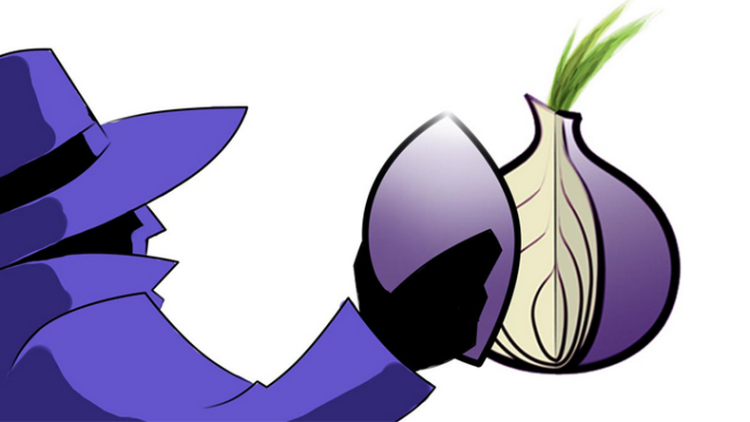

Actualités :
Vault 7 : Le leak de trop pour la C.I.A. ?
Le site de Julian Assange vient de publier des milliers de documents qui exposent les innombrables outils de piratage de la célèbre agence d’espionnage américaine. Un leak édifiant, plus riche encore que les révélations d’Edward Snowden. Lire la suite
Edward Snowden livré aux États Unis ?
L'ambassadeur américain Julien Charlent s'est aujourd'hui entretenu avec Vladimir poutine au Kremlin pour un éventuel accord sur un échange d'Edward Snow, l'ancien analyste à la N.S.A. qui a révélé des informations sur la surveillance de masse mise en place par la N.S.A. et la C.I.A. ces dernières années. Lire la suite
Programme de la semaine :
Tor : l'anonymat total sur Internet
Tor est un réseau informatique superposé mondial et décentralisé. Il se compose d'un certain nombre de serveurs, appelés nœuds du réseau et dont la liste est publique5. Ce réseau permet d'anonymiser l'origine de connexions TCP6. Cela peut entre autres servir à anonymiser la source d'une session de navigation Web ou de messagerie instantanée7. Cependant, l'anonymisation du flux n'est pas suffisante8, car l'application peut potentiellement transmettre des informations annexes permettant d'identifier la personne : c'est pourquoi le projet Tor développe également un navigateur Web basé sur Firefox, Tor Browser, ainsi que d'autres applications spécialement modifiées pour préserver l'anonymat de leurs usagers.
Difficulté : 3/5
Jeu à l'affiche
Copyright © 2017 WikiLibre Inc. All rights reserved.